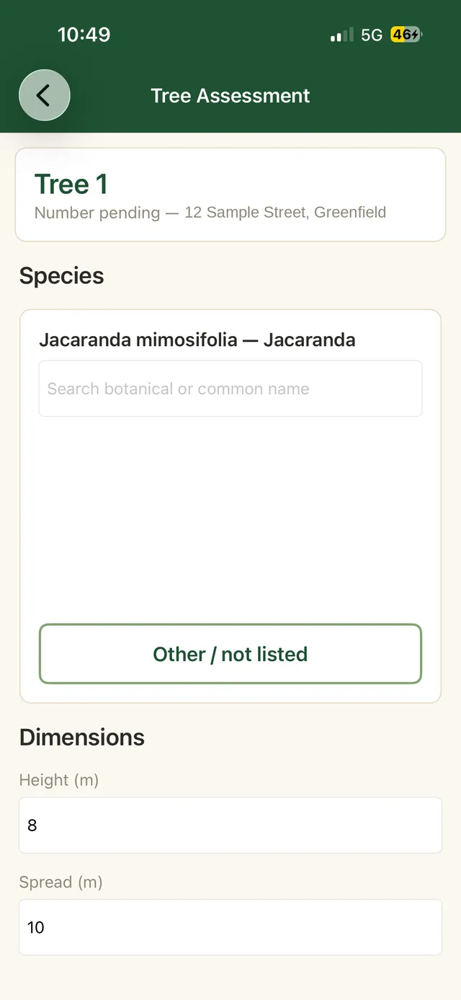
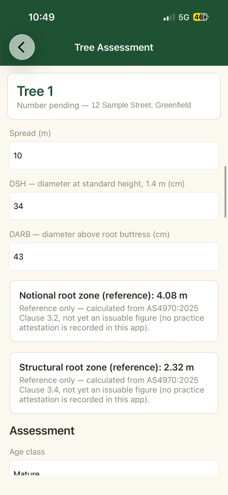
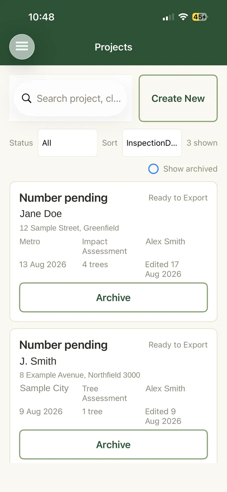

TIMBR Field › What TIMBR Field does on site
Features
What TIMBR Field does on site
The app walks each tree from arrival to a finished record. It is the same sequence you already follow in your head, just written down properly, and it keeps working ten metres past the last bar of reception.
A form that speaks arboriculture
Species, dimensions, age class, health, structure, SULE, retention value and recommended works, captured in a guided sequence with sensible lists to choose from. Nobody has to remember the wording, and records come back the same whoever did the inspection.
- A searchable species library, botanical and common names
- Recommended works recorded against the tree, ready for the report
- Site context and client details travel with every assessment
- The same fields every time, so two consultants produce comparable records


AS 4970:2025 figures worked out while you type
Enter the trunk diameter and the app shows the reference Notional Root Zone and Structural Root Zone straight away, worked out the way the 2025 standard sets out. Setting the actual Tree Protection Zone on the ground is still your call, which is exactly how the standard intends it.
- NRZ and SRZ reference figures in your hand at the tree
- Multi stemmed trees combined correctly rather than added up
- The 2025 terminology, so records match the standard you report against
- Council audit workflows for checking scheduled works
Reception is not your problem any more
Every entry is written to the phone the moment you save it. Assess a whole site in a valley with the phone in flight mode if you like. When you drive back into range the queue empties itself into your SharePoint site, and the project list tells you exactly what has gone and what is still waiting.
- Full capture with zero connectivity, photos included
- Clear status on every project, so nothing is quietly lost
- Records and images travel together, nothing left behind

The rest of what it does
Photos that stay attached
Take the photo in the app and it belongs to that tree forever, with the location it was taken at. When a report gets questioned two years later, the evidence is still where you left it.
The job details come with it
Client, address, council, report type and inspection date sit with every assessment, so the person writing the report is not chasing you for context.
Nothing new for IT to approve
Sign in is your existing Microsoft 365 account and the app writes to SharePoint you already run. More on where your data lives.
See it on your own jobs
The beta includes setup against your own Microsoft 365 tenant and a walk through with an arborist rather than a support script.
Now in private beta. Or call 0400 777 395.